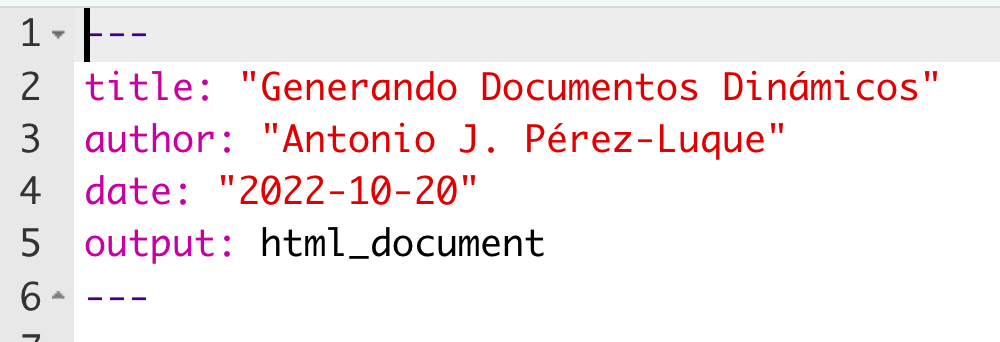

[1] 1 2 3 4 5Documentos Reproducibles con Rmarkdown (slides)
Antonio J. Pérez-Luque ![]()
Instituto de Ciencias Forestales (CIFOR) | INIA-CSIC (Madrid)
2025-01-09
1. Encabezado YAML
YAML, es un lenguaje de serialización de datos para todos los lenguajes de programación. Se diseño para representar datos jerárquicos pero que sea fácil de escribir y leer por humanos.
- Delimitado por tres guiones (
---) al inicio y al final (a modo de bloque) - Estructura anidada
- Contiene metadatos del documento: título del documento, autor, los formatos de salida, etc)


| Formato | Sintáxis | Ejemplo |
|---|---|---|
| Cursiva | *Texto* |
Esto es cursiva |
| Negrita | **Negrita** |
Esto es negrita |
| Link | [Descripción del texto](url) |
Un link |
| Imágenes |  |
Una imagen |
En la siguiente animación (Figura 4) puedes ver la anatomía de un trozo de código.

Opciones y nombres de los bloques
Cuando creamos un documento reproducible es importante identificar los diferentes trozos de código para poder ejecutarlos a lo largo de todo el documento. Esta aproximación tiene varias ventajas:
- Se puede navegar mas cómodamente a los bloques específicos usando el navegador de código desplegable abajo a la izquierda en el editor de script:

¿Alguna duda?
Ayuda JDC2022-050056-I financiada por MCIN/AEI /10.13039/501100011033 y por la Unión Europea NextGenerationEU/PRTR

Si usas esta presentación puedes citarla como:
Pérez-Luque, A.J. (2025). Reproducibilidad en Ciencia. Material Docente de la Asignatura: Ciclo de Gestión de los Datos. Master Universitario en Conservación, Gestión y Restauración de la Biodiversidad. Universidad de Granada. https://ecoinfugr.github.io/ecoinformatica/